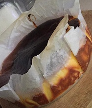

My Hobbies
I enjoyed watching movies or dramas since I was in secondary school. My favorite would be among the Chinese and Korean movies and dramas. Now I frequently watch them on Netflix rather than television. Here is a list of my favorite dramas, movies, and one movie trailer.
(Our Times Movie Trailer)
I love listening to music while singing the song simultaneously. It does release my tension and makes me feel much better. Sometimes I prefer songs that have meaning and are related to me. There are a few songs that I frequently listen to now and here is a list of the songs.
Peace Be Upon You - Maher Zain
Mian Zi - Yong Qi
Fireworks Star - Liu Yu Ning
Enchanted - Taylor Swift
Love Yourself - Justin Bieber
I love food and always find great places that offer delicious food to eat and hang out with friends. From liking the food then endeavoring it out on my own has encouraged me to cook and bake. Since then, I have always cooked, baking, and tried out a new recipe at home whenever I have free time. The side dish that I always cook is Ayam Paprik and the dessert that I bake is basque burnt cheesecake.
Basque Burnt Cheesecake that I made